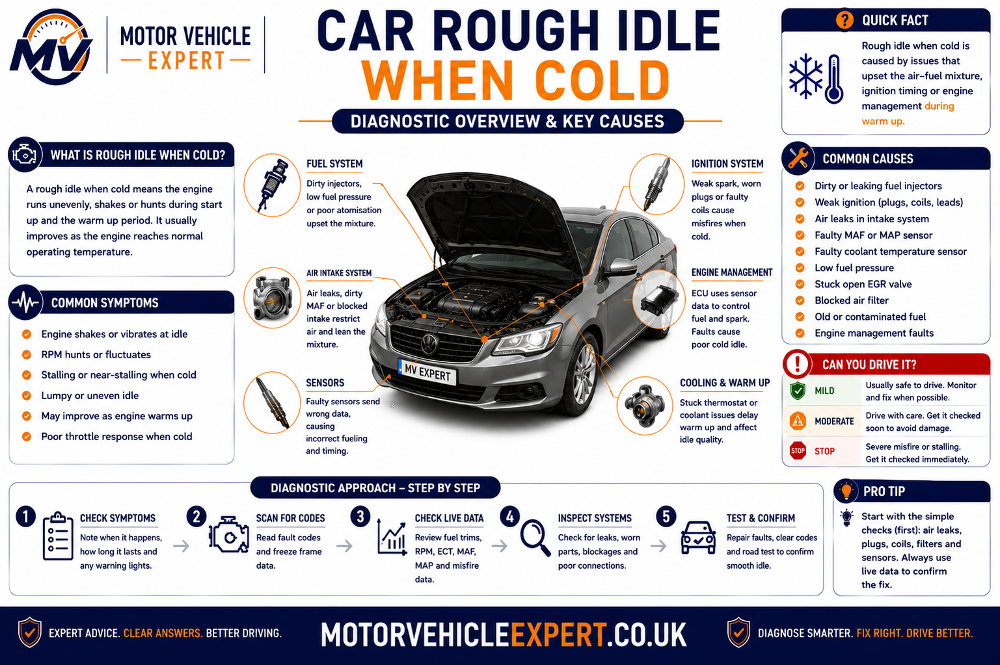
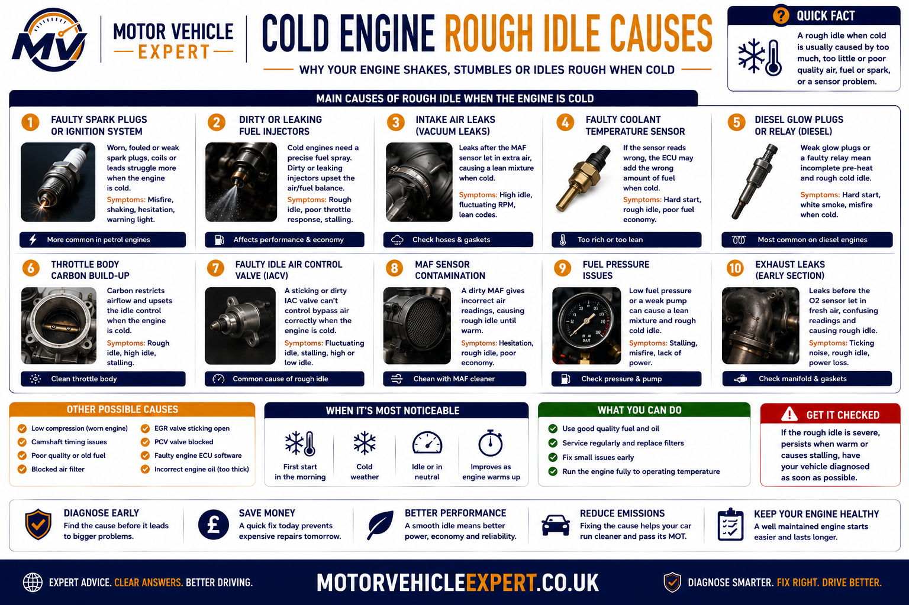
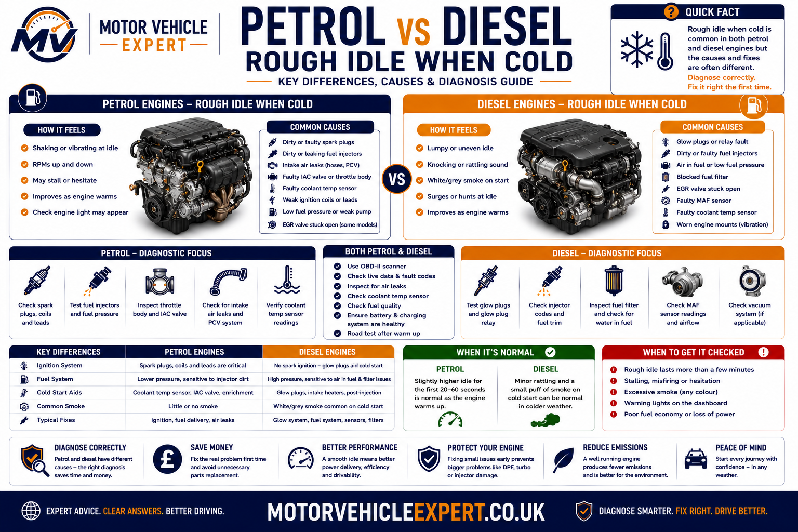
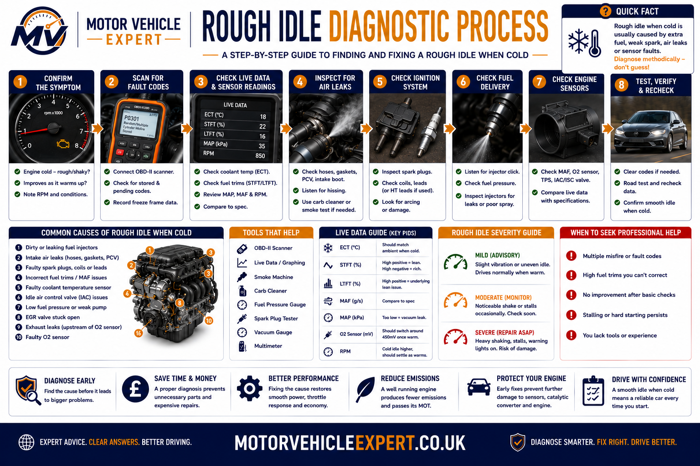
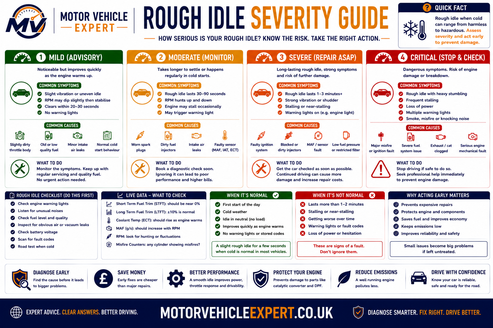
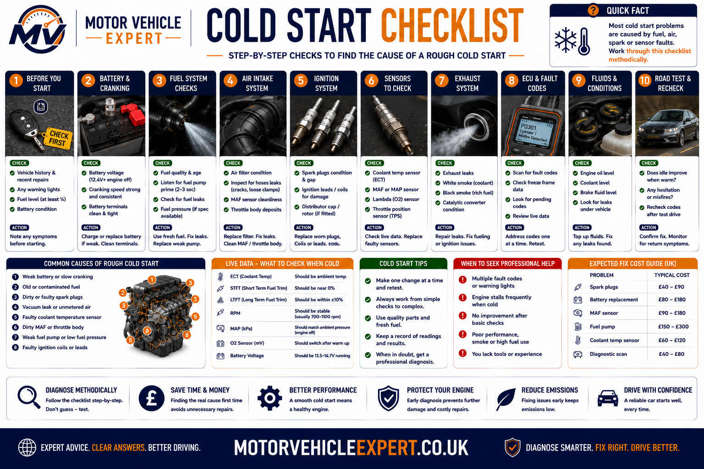

Why Does My Car Idle Rough When It's Cold?
A car that idles roughly only when cold usually has a fault affecting the engine before it reaches normal operating temperature. Modern engines rely on additional fuel, accurate sensor readings and stable ignition during a cold start. If one of these systems is not working correctly, the engine may shake, misfire, hunt between different idle speeds or even stall until it warms up.
In petrol vehicles, the most common causes include worn spark plugs, failing ignition coils, vacuum leaks, dirty throttle bodies, contaminated mass airflow sensors and faulty coolant temperature sensors. Diesel engines are more likely to suffer from glow plug faults, injector problems or low fuel pressure during cold starts.
If the rough idle disappears completely once the engine reaches normal operating temperature, the fault is usually linked to the cold-start enrichment system rather than a major internal engine failure. The longer the rough running continues after warm-up, the more likely it is that a permanent mechanical or fuel-system problem exists.
Why Engines Idle Differently When Cold
Every engine behaves differently during the first few minutes after starting. Cold metal components, thicker engine oil and poor fuel vaporisation require the engine management system to adjust ignition timing, fuelling and idle speed until normal operating temperature is reached.
Sensors continually monitor coolant temperature, intake air temperature, engine speed and airflow so the ECU can calculate exactly how much fuel the engine needs. If any of these values become inaccurate, combustion may become unstable, producing a rough idle or intermittent misfire.
Cold Fuel
Petrol does not vaporise as efficiently in low temperatures, requiring additional fuel during cold starts.
Cold Oil
Thick engine oil increases internal resistance until the engine warms, placing greater demand on the starter and battery.
Cold Sensors
The ECU depends on accurate sensor information to maintain a stable idle while the engine reaches operating temperature.

Common Signs of a Rough Idle During Cold Starts
Different faults produce different symptoms. Understanding exactly how the engine behaves during the first few minutes of operation often allows a technician to narrow down the fault before diagnostic equipment is even connected.
Typical Cold-Start Symptoms
- ✓ Engine shakes while idling.
- ✓ Idle speed rises and falls repeatedly.
- ✓ Misfire disappears after warming up.
- ✓ Engine occasionally stalls.
- ✓ Hesitation during initial acceleration.
- ✓ Engine management light may illuminate.
- ✓ Poor fuel economy.
- ✓ Increased exhaust emissions.
Symptoms That Need Immediate Diagnosis
- ⚠ Flashing engine management light.
- ⚠ Strong smell of unburnt fuel.
- ⚠ Loud mechanical knocking.
- ⚠ Thick exhaust smoke.
- ⚠ Vehicle repeatedly stalls.
- ⚠ Severe vibration after warm-up.
- ⚠ Oil pressure warning light.
- ⚠ Coolant warning light.
If the engine runs perfectly once warm, tell the garage exactly how long the rough idle lasts and whether outside temperature affects the problem. These details can significantly reduce diagnostic time by helping technicians reproduce the fault under the same cold-start conditions.
Common Causes of a Car Idling Rough When Cold
Rough cold idle is a symptom rather than a diagnosis. Several ignition, intake, fuelling, electrical and mechanical faults can produce similar shaking, hunting or misfiring during the first few minutes after startup. The correct approach is to identify the pattern, inspect the most likely systems and test the fault before replacing parts.
Faults often become more noticeable when cold because fuel does not vaporise as easily, engine oil is thicker, battery output is under greater demand and the ECU depends heavily on accurate temperature and airflow information. A component that performs adequately once warm may struggle during these more demanding cold-start conditions.

Worn Spark Plugs
Worn, fouled or incorrectly gapped spark plugs may struggle to ignite the richer cold-start mixture. The engine may shake, hesitate or log a cylinder-specific misfire code before smoothing out when warm.
Weak Ignition Coil
A deteriorating ignition coil can produce a weak or intermittent spark. Damp weather, low temperature and increased cold-start fuelling may expose the weakness before it becomes a permanent misfire.
Vacuum or Intake Leak
Split hoses, damaged intake seals or leaking manifold gaskets allow unmetered air into the engine. This can make the mixture too lean and cause hunting, hesitation or unstable idle while cold.
Dirty Throttle Body
Carbon and oil deposits around the throttle plate can restrict the small amount of airflow needed at idle. The ECU may struggle to control engine speed until the deposits are cleaned or an adaptation procedure is completed.
Coolant Temperature Sensor
The ECU uses coolant temperature to calculate cold-start enrichment. If the sensor reports that a cold engine is already warm, too little fuel may be supplied and the engine can idle poorly or stall.
MAF or MAP Sensor Fault
Contaminated or inaccurate airflow and manifold-pressure readings can cause incorrect fuelling. Live data should be checked before condemning a sensor because intake leaks can produce similar readings.
Dirty or Faulty Injector
A restricted injector may supply too little fuel, while a leaking injector may over-fuel a cylinder after the vehicle has been parked. Either condition can produce rough starting, fuel smell or misfire.
Weak Battery or Low Cranking Voltage
Low voltage can reduce cranking speed and affect ignition, injector and control-module performance. The battery may still start the engine but fail to maintain ideal voltage during a cold start.
Glow Plug or Control Fault
Failed glow plugs, a faulty relay or incorrect control can leave one or more diesel cylinders too cold for clean combustion. The engine may start roughly, produce white smoke and improve after several seconds.
Pressure Loss After Parking
A weak pump, leaking injector, faulty regulator or non-return valve can allow fuel pressure to fall while the car is parked. The first start may be difficult or uneven until pressure rebuilds.
EGR Valve Stuck Open
An exhaust gas recirculation valve that remains open at idle can dilute the fresh intake charge and cause shaking or stalling. The fault is more common on diesel engines but can also affect petrol vehicles.
Low Compression
Valve leakage, worn piston rings, timing problems or a damaged head-gasket area can reduce cylinder compression. Mechanical faults are more likely when the misfire remains after warm-up or repeatedly affects the same cylinder.
A misfire code identifies the affected cylinder, not necessarily the failed component. A lean-mixture code does not automatically prove the airflow sensor is faulty. Use fault codes as a starting point, then test ignition, airflow, fuel delivery, compression and wiring before ordering parts.
Petrol vs Diesel Rough Idle When Cold
Petrol and diesel engines can produce similar shaking, spluttering and unstable idle, but the systems responsible for cold combustion are different. Petrol engines depend on a correctly timed spark, while diesel engines depend on compression heat, accurate injection and effective pre-heating.

Common Petrol Cold-Idle Faults
Petrol engines need a strong spark and correctly controlled air-fuel mixture. Weak ignition components or unmetered intake air frequently cause cold-start misfires that become less noticeable as combustion conditions improve.
- Worn or fouled spark plugs.
- Weak ignition coils or damaged leads.
- Vacuum and intake manifold leaks.
- Dirty throttle body or idle-air passage.
- Incorrect coolant-temperature reading.
- Contaminated MAF or faulty MAP readings.
- Leaking or restricted petrol injectors.
- Carbon deposits on direct-injection engines.
Common Diesel Cold-Idle Faults
Diesel fuel ignites through heat created by compression. Cold cylinder walls, weak cranking speed or ineffective glow plugs can prevent clean combustion until the engine has generated enough heat.
- Failed glow plug on one or more cylinders.
- Glow relay or control-module fault.
- Weak battery and slow cranking speed.
- Poor injector spray pattern or correction value.
- Low rail pressure during cranking.
- Air entering the low-pressure fuel circuit.
- EGR valve sticking open.
- Low compression or incorrect valve timing.
Fuel Smell and Lumpy Exhaust Note
A strong petrol smell with shaking can indicate an ignition misfire, leaking injector or mixture fault. Unburnt fuel may overheat and damage the catalytic converter.
White Smoke After Startup
White or grey smoke with uneven running may indicate incomplete cold combustion caused by weak glow operation, injector imbalance or low compression.
Roughness That Continues Warm
A fault that remains after the engine reaches operating temperature requires broader testing for persistent ignition, fuel, airflow, compression or timing problems.
Glow plugs are a common cause of rough diesel cold starts, but low cranking voltage, injector imbalance, air in the fuel system and poor compression can create almost identical symptoms. Test the complete starting and combustion system before approving replacement.
How to Diagnose a Rough Idle When Cold
Cold-start faults should be diagnosed while the engine is genuinely cold. Starting or warming the vehicle before a garage sees it can hide the symptom and make testing much more difficult. Where possible, leave the vehicle overnight so the technician can observe the first start of the day.
A reliable diagnosis combines the driver’s description with battery testing, fault-code scanning, live data, visual inspection and targeted mechanical tests. The aim is to prove whether the fault is caused by ignition, air, fuel, sensor input, electrical supply or engine condition.

1. Confirm the Cold-Start Pattern
Record the outside temperature, cranking time, idle speed, duration of the rough running and whether the fault disappears completely after warm-up.
2. Check Battery and Cranking Voltage
Test battery condition, terminal security, earth connections and the voltage drop during cranking. Low cranking speed can affect petrol and diesel combustion.
3. Scan Fault Codes Before Clearing Them
Read stored, pending and permanent codes. Preserve freeze-frame data, which may show coolant temperature, engine speed and load when the fault was detected.
4. Compare Cold Live Data
Before startup, coolant and intake-air temperature readings should be reasonably close to ambient temperature. Implausible readings can identify a sensor or wiring fault.
5. Check Misfire Counts
Use live data to identify whether one cylinder or several cylinders are affected. A single-cylinder fault suggests a local ignition, fuel or compression issue.
6. Inspect Ignition Components
On petrol engines, inspect plugs, coils, leads and connectors. Swap suitable coils between cylinders only where this is safe and useful, then check whether the misfire follows.
7. Test for Intake Leaks
Inspect hoses and breather circuits, then use an appropriate smoke test to locate leaks around the manifold, vacuum lines and intake system.
8. Test Fuel Delivery
Check fuel pressure, pressure retention, injector operation and cylinder correction values where available. Do not condemn injectors from sound or appearance alone.
9. Check Diesel Glow Operation
Test glow plug resistance or current draw, power supply and control operation. A stored glow code should be confirmed electrically before parts are replaced.
10. Inspect Throttle and EGR Operation
Confirm that the throttle body, idle control strategy and EGR valve respond correctly. Deposits or sticking mechanisms can disturb idle airflow.
11. Test Mechanical Condition
If electrical and fuelling checks are satisfactory, perform compression, relative compression, leak-down or timing tests as appropriate.
12. Verify the Next Cold Start
After repair, allow the engine to cool fully and repeat the test. A warm restart alone does not prove that a cold-start fault has been resolved.
Freeze-frame information records operating conditions when the ECU first recognised a fault. A coolant reading that was implausibly warm during an overnight cold start, for example, may point towards a temperature-sensor or wiring problem even if the reading appears normal later.
Cold-start symptoms can disappear within minutes. Tell the garage not to start the vehicle before diagnosis, or arrange to leave it overnight. Reproducing the fault correctly is often the difference between a proven repair and expensive parts replacement by guesswork.
When Is a Rough Cold Idle Serious?
Not every rough idle means the engine is about to fail. Some faults simply affect cold-start refinement, while others can quickly damage expensive components such as catalytic converters, diesel particulate filters or the engine itself. Understanding the severity helps you decide whether the vehicle can continue to be driven or needs immediate inspection.

Monitor
Slight vibration lasting less than one minute with no warning lights, no smoke and normal performance afterwards.
Book Diagnosis
Rough idle lasts several minutes, occasional hesitation or poor fuel economy develops, but the vehicle remains driveable.
Stop Driving
Flashing engine management light, severe misfire, heavy smoke, stalling or loud mechanical noises.
Typical UK Repair Costs
Repair costs vary depending on the actual fault causing the rough idle. Replacing parts without proper diagnosis often increases costs unnecessarily, so accurate testing should always come first.
Spark Plug Replacement
Most petrol engines
£80–£220Ignition Coil
Single coil replacement
£120–£320Throttle Body Cleaning
Including idle adaptation
£70–£180Coolant Temperature Sensor
Sensor replacement
£90–£220Fuel Injector Repair
Cleaning or replacement
£150–£700+Glow Plug Replacement
Diesel engines
£150–£450A professional diagnostic session costing around £60–£120 is usually cheaper than replacing several parts by guesswork. Modern vehicles often require live data analysis before the correct repair can be confirmed.
Should You Buy a Car That Idles Rough When Cold?
A rough cold idle should never be ignored during a viewing. Some vehicles only need routine servicing, while others may have expensive injector, compression or timing problems hidden beneath the symptoms.
Generally Acceptable
- ✓ Full service history.
- ✓ Recent ignition service.
- ✓ Stable idle once warm.
- ✓ No warning lights.
- ✓ No smoke.
- ✓ Fault already diagnosed.
Walk Away
- ✗ Flashing engine management light.
- ✗ Heavy smoke.
- ✗ Loud knocking noises.
- ✗ Multiple misfire codes.
- ✗ Seller refuses cold start.
- ✗ Persistent rough running when warm.
Always request a completely cold start. Sellers sometimes warm the engine before viewings because many cold-start faults become much less obvious once the engine reaches operating temperature.
Cold Start Checklist
Before replacing any parts, work through the following checks in a logical order. This mirrors the process used by experienced technicians and helps avoid misdiagnosis.

Owner Checks
- Check engine oil.
- Check coolant level.
- Listen for unusual noises.
- Observe warning lights.
- Check battery condition.
- Record outside temperature.
Workshop Checks
- Read fault codes.
- Inspect live sensor data.
- Check ignition system.
- Test fuel delivery.
- Inspect for vacuum leaks.
- Verify repair with a genuine cold start.
The majority of cold-idle faults are caused by ignition, intake air or sensor issues rather than major engine damage. Diagnosing the fault while the engine is genuinely cold is the most important step in achieving an accurate repair.
Can You Drive With a Rough Idle When Cold?
Whether the car is safe to drive depends on the severity of the rough running, how long it lasts and whether warning lights, smoke, fuel smells, stalling or poor acceleration are also present. A brief, mild vibration that clears completely may allow careful short-term use while diagnosis is arranged, but repeated misfiring should not be treated as normal.
Light Roughness That Clears Quickly
The engine is slightly uneven for less than a minute, no warning lights appear and the vehicle drives normally after warming up.
Repeated Shaking or Hesitation
The rough idle lasts several minutes, returns every morning or is accompanied by hesitation, poor fuel economy or occasional stalling.
Active Misfire or Warning Signs
The engine light flashes, the car shakes violently, smoke is heavy, raw fuel can be smelled or the rough running continues when warm.
A flashing engine management light commonly indicates an active misfire. Unburnt fuel can enter the exhaust and overheat the catalytic converter, turning an ignition or injector fault into a much more expensive exhaust repair.
The oil-pressure light appears, the coolant warning light comes on, mechanical knocking develops, the engine overheats or the vehicle loses substantial power. These symptoms may indicate a fault more serious than an ordinary cold-start idle problem.
What Should a Garage Check for Rough Cold Idle?
A good garage should reproduce the problem from a genuinely cold start before replacing parts. The inspection should combine electrical, electronic, intake, ignition, fuel and mechanical testing rather than relying on a single fault code.
Cold-Start Observation
The technician should record cranking speed, idle quality, smoke, exhaust smell, warning lights and how long the fault lasts.
Battery and Charging Test
Battery condition, cranking voltage, terminal security, earth resistance and alternator output should be checked.
Fault Codes and Freeze Frame
Stored, pending and permanent codes should be read before anything is cleared, together with the conditions recorded when the fault occurred.
Live Sensor Data
Coolant temperature, intake temperature, airflow, manifold pressure, fuel trims and engine speed should be compared with expected values.
Ignition Testing
Petrol engines may require spark-plug inspection, coil testing, misfire-count analysis and wiring checks.
Air-Leak Inspection
Intake hoses, breather circuits, manifold seals and vacuum lines should be inspected and smoke-tested where appropriate.
Fuel-System Testing
The garage may check fuel pressure, pressure retention, injector operation, correction values and leak-back depending on engine type.
Glow-System Testing
Diesel glow plugs, supply voltage, current draw, relay operation and control-module commands should be tested rather than guessed.
Mechanical Condition
Persistent faults may require compression, leak-down, valve-timing or relative-compression testing.
Leave the vehicle with the garage overnight and ask them not to start it before diagnosis. A technician cannot accurately investigate a cold-start fault after the engine has already been warmed up.
Can a Service Fix Rough Idle When Cold?
A service can improve rough cold running when the cause is overdue maintenance, but it will not repair every ignition, sensor, injector or mechanical fault. The service history should be reviewed before assuming that replacing routine items will solve the problem.
Spark Plugs
Worn, fouled or incorrectly gapped plugs may misfire more easily during cold enrichment and initial acceleration.
Air Filter
A heavily restricted air filter may reduce airflow and contribute to poor response, although it is rarely the only cause of a severe cylinder misfire.
Fuel Filter
A restricted fuel filter can contribute to poor starting, reduced fuel pressure and hesitation, particularly on diesel engines.
Correct Engine Oil
Incorrect viscosity or severely degraded oil can make cold operation noisier and increase internal resistance during startup.
Throttle-Body Cleaning
Cleaning deposits may improve idle airflow on suitable engines, but some vehicles require an electronic throttle adaptation afterwards.
Diagnostic Scan
Scanning stored codes and live data before service work can prevent useful evidence from being overlooked.
New plugs and filters may solve maintenance-related rough running, but they will not repair an intake leak, failed sensor, injector imbalance, wiring problem or low compression. Confirm the cause if the symptom remains after servicing.
Continue Your Rough Idle and Cold-Start Diagnosis
Rough cold idle can overlap with misfires, engine warning lights, battery weakness, smoke, vibration, hesitation and power loss. Use these confirmed live Motor Vehicle Expert guides to investigate the symptom that most closely matches your vehicle.
Engine Misfire Symptoms and Causes
Understand cylinder misfires, shaking, spluttering, fuel smells and the difference between ignition, fuel and compression faults.
Read Misfire GuideCar Vibrates at Idle
Investigate engine vibration, worn mounts, misfires and uneven idle when the problem is present both cold and warm.
Read Vibration GuideEngine Management Light Guide
Learn what steady and flashing engine lights mean, how fault codes are created and when driving should stop.
Read Warning-Light GuideCan You Drive With the Engine Light On?
Use this guide when rough idle appears with an amber or flashing engine management warning light.
Check Driving RiskHow to Check Car Battery Health
Check battery condition, cold-cranking ability and voltage-related symptoms before replacing ignition or fuel parts.
Check Battery HealthCar Hesitates When Accelerating
Follow the diagnosis when rough cold idle develops into hesitation, flat spots or delayed response under acceleration.
Read Hesitation GuideCar Smokes When Starting
Compare white, blue, grey and black startup smoke with glow, injector, oil-burning, coolant and fuelling problems.
Read Smoke GuideP0300 Random Misfire Code
Understand the P0300 fault code, common ignition and fuelling causes, diagnosis and driving risks.
Read P0300 GuideA fault code becomes more useful when combined with the exact cold-start pattern. Note whether the engine was fully cold, how long the roughness lasted, whether one cylinder was affected and what changed after warm-up.
Car Rough Idle When Cold Questions Answered
These answers cover the most common questions UK drivers ask about cold idle, misfires, petrol and diesel causes, warning lights, servicing, diagnosis, repair costs and driving safety.
Why does my car idle rough only when cold?
A cold engine requires additional fuel, strong ignition, good battery voltage and accurate temperature and airflow information. Weak spark plugs, ignition coils, intake leaks, sensors, injectors or diesel glow systems may therefore cause rough running before the engine warms up.
Why does the rough idle disappear when the engine warms up?
Fuel vaporisation, oil flow, cylinder temperature and combustion stability improve as the engine warms. This can temporarily hide weak ignition, small air leaks, incorrect sensor readings or marginal fuel delivery.
Can bad spark plugs cause rough idle when cold?
Yes. Worn, fouled or incorrectly gapped spark plugs may struggle to ignite the richer cold-start mixture and can produce shaking, hesitation or a cylinder-specific misfire.
Can a weak ignition coil cause rough cold idle?
Yes. A deteriorating coil can produce a weak or intermittent spark, particularly during damp, cold conditions or when cold-start fuelling increases the demand on the ignition system.
Can a weak battery cause rough idle after starting?
A weak battery can reduce cranking speed and voltage available to control modules, coils, injectors and diesel glow systems. The engine may still start but run unevenly until voltage stabilises.
Can an intake or vacuum leak cause rough idle when cold?
Yes. Unmetered air entering through split hoses, breather circuits or manifold seals can make the mixture too lean, causing hunting, hesitation or stalling that may be worse while cold.
Can a dirty throttle body cause rough cold idle?
Carbon and oil deposits around the throttle plate can restrict the small amount of airflow needed at idle. Cleaning may help on suitable vehicles, although electronic throttle adaptation may also be needed.
Can a coolant temperature sensor cause rough idle?
Yes. If the sensor incorrectly reports that a cold engine is warm, the ECU may provide insufficient cold-start enrichment. The engine can then idle poorly, hesitate or stall.
Can a MAF or MAP sensor cause rough cold running?
Incorrect airflow or manifold-pressure information can cause poor fuelling decisions. Live data and intake-leak testing should be used before a sensor is replaced.
Can dirty fuel injectors cause rough idle when cold?
Yes. Restricted injectors may under-fuel a cylinder, while leaking injectors can allow excess fuel into a cylinder after the vehicle has been parked. Both conditions can cause difficult or uneven cold starts.
Can diesel glow plugs cause rough cold idle?
Yes. One or more failed glow plugs can leave the cylinders too cold for clean combustion. The diesel may shake, produce white smoke and improve after several seconds of running.
Why does my diesel produce white smoke and run rough when cold?
White or grey smoke during rough cold operation can indicate incomplete combustion caused by weak glow operation, injector imbalance, low cranking speed, air in the fuel system or reduced compression.
Is rough idle with a flashing engine light dangerous?
Yes. A flashing engine management light often indicates an active misfire. Continuing to drive may send unburnt fuel into the exhaust and overheat the catalytic converter.
Can I drive if the rough idle clears after one minute?
Mild roughness that clears quickly with no warning lights, smoke, smells or loss of power may allow careful short-term driving while diagnosis is arranged. Repeated symptoms should still be investigated.
Should I stop driving if the car shakes badly when cold?
Stop and arrange diagnosis if the shaking is severe, the engine light flashes, the vehicle stalls, fuel can be smelled, smoke is heavy or the problem continues after warm-up.
Will a full service fix rough idle when cold?
It may help when overdue spark plugs, filters or incorrect oil are the cause. A service will not repair every sensor, wiring, intake, injector or compression fault, so diagnosis is still important.
What fault codes are commonly linked to rough idle?
Possible codes include P0300 and cylinder-specific P0301–P0304 misfire codes, mixture codes such as P0171, airflow codes, coolant-temperature sensor codes and glow-system codes. The exact code depends on the vehicle and fault.
Should the garage diagnose the car from a cold start?
Yes. A fault that disappears after warm-up can be missed if the vehicle is started before the technician inspects it. Leaving the car overnight gives the garage the best chance of reproducing the symptom.
How much does rough cold idle cost to repair in the UK?
Costs depend on the cause. Simple throttle cleaning or spark-plug work may cost under a few hundred pounds, while injector, wiring, compression or timing repairs can cost considerably more.
Should I buy a used car that idles roughly when cold?
Only consider it after the fault has been diagnosed and the repair cost is known. Avoid vehicles with flashing warning lights, heavy smoke, mechanical knocking, persistent warm misfires or sellers who refuse a genuine cold start.
Diagnose the Engine While It Is Genuinely Cold
A rough cold idle is often caused by ignition weakness, incorrect intake airflow, sensor errors, fuel delivery or diesel glow operation rather than immediate internal engine failure. However, a fault that repeats every morning should not be dismissed simply because the engine eventually becomes smooth.
Record the exact cold-start pattern, scan the vehicle before clearing fault codes, compare live temperature data with ambient conditions and test the relevant system before replacing parts. Where the engine light flashes, smoke is heavy or the rough running continues when warm, arrange prompt diagnosis and avoid unnecessary driving.
Leave the vehicle overnight with a trusted garage so the technician can observe the first cold start. Accurate reproduction of the fault is more valuable than replacing several likely parts by guesswork.